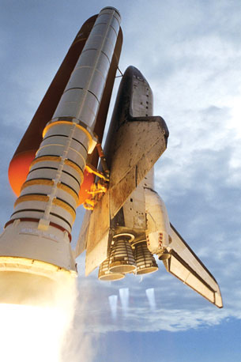

Photo courtesy NASA/JSC
Have you ever had the opportunity to watch a launch of the Space Shuttle in person? The ability to launch rockets that leave Earth’s surface and travel into space is one of humankind’s greatest achievements.
The video below provides a close-up of a Space Shuttle launch from a unique perspective. This video comes from cameras located at various positions on the solid rocket booster engines, which are the long white cylinders that are located on each side of the large, orange main fuel tank. The table that appears below the video provides more information about what you are seeing in the video.
Time on Video (minutes) |
Event |
Camera Position on Solid Rocket Booster Engine |
0:00 to 1:00 |
Separation of solid rocket boosters and re-entry |
Bottom of left-side solid rocket booster looking upward |
1:01 to 2:48 |
Launch and separation |
Top of left-side solid rocket booster looking downward |
2:49 to 3:40 |
Separation of solid rocket boosters and re-entry |
Bottom of right-side solid rocket booster looking upward |
3:41 to 4:50 |
Launch and separation |
Top of right-side solid rocket booster looking downward |
4:50 to 6:00 |
Separation of solid rocket engines |
Midway along solid rocket booster engines |
Extremely vigorous chemical reactions take place in the rocket engines of the Space Shuttle. The solid rocket booster engines use one type of fuel, whereas the reaction that occurs in the main engines uses hydrogen and oxygen gases, which are contained in the large orange tank attached to the shuttle. How much hydrogen and oxygen is necessary to propel the Space Shuttle into space? Is a similar quantity of each gas required? How can the balanced chemical equation (shown below) of the reaction that occurs in the main engines provide you with information about the quantity of each gas required to perform this operation?
2 H2(l) + O2(l) → 2 H2O(g)
Examining chemical reactions using stoichiometry—an approach that considers the quantities of substances involved in a reaction—will be helpful. In order to learn about stoichiometry you will need to remind yourself of how to write, balance, and classify chemical reactions so that you can use them to interpret a chemical system. In this module you will learn to calculate the quantities of reactants and products involved in a chemical process, along with using calculations of percent yield to analyze the results of experiments you carry out.
By the end of this module you will have a better appreciation for stoichiometry. Whether you are planning to launch a rocket into space and support humans during spaceflight, or to experiment with a recipe when preparing food, a knowledge of stoichiometry is essential.